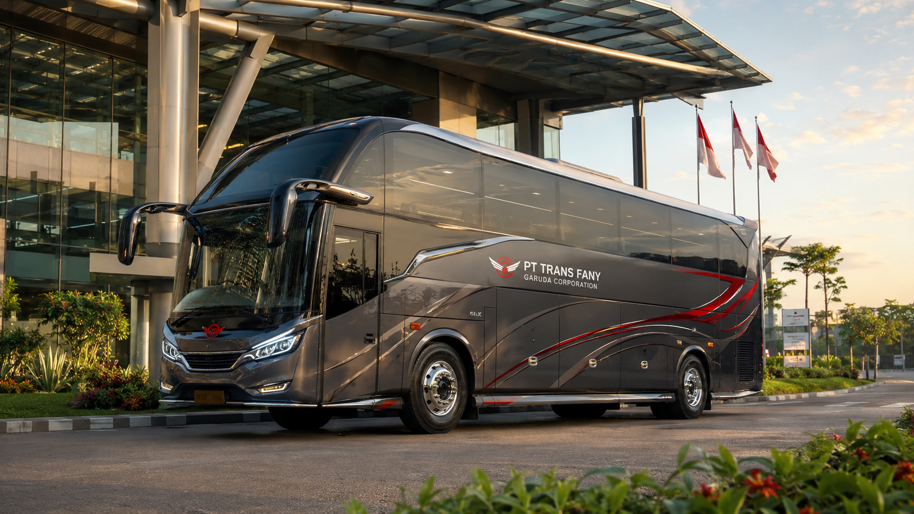
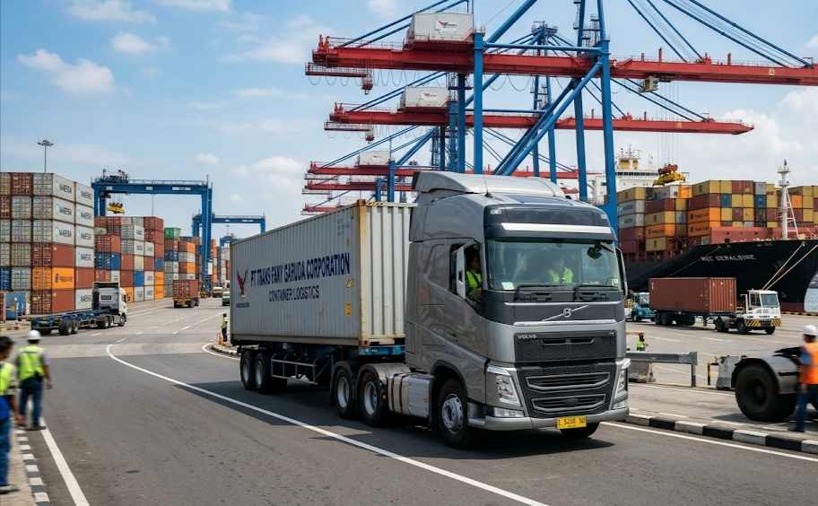
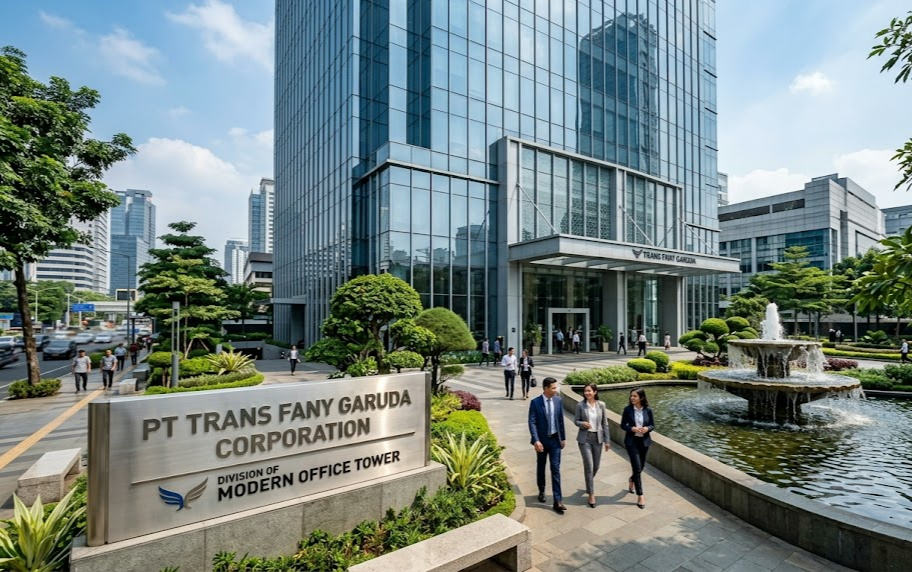
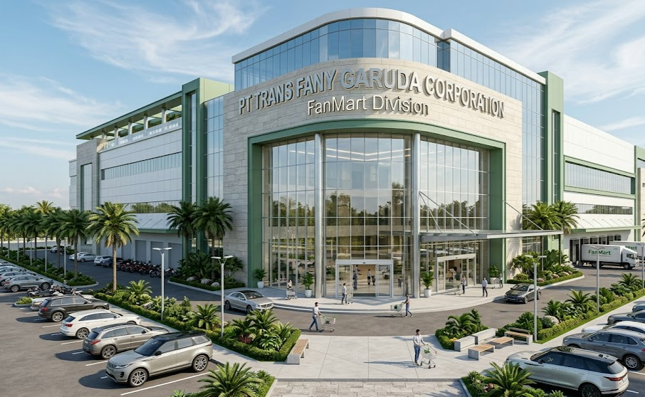
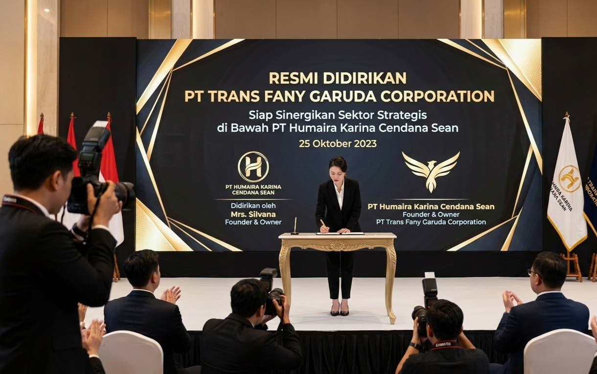

Konstruksi
Solusi pembangunan infrastruktur modern, berkualitas, dan berkelanjutan.
Selengkapnya →PT TRANS FANY GARUDA CORPORATION merupakan perusahaan korporasi terintegrasi yang bergerak di bidang konstruksi, transportasi, logistik, properti, dan ritel modern.
PT TRANS FANY GARUDA CORPORATION, bagian dari kelompok usaha PT HUMAIRA KARINA CENDANA SEAN, adalah sebuah korporasi terintegrasi yang hadir sebagai motor penggerak perekonomian dan pembangunan nasional.
Dengan portofolio bisnis yang mencakup konstruksi, transportasi, logistik, properti, dan jaringan ritel modern Fanmart, perusahaan berkomitmen menghadirkan inovasi, profesionalisme, serta kualitas terbaik dalam setiap layanan.
SelengkapnyaPT TRANS FANY GARUDA CORPORATION memiliki lima lini bisnis utama yang saling terintegrasi untuk mendukung pembangunan nasional.
Solusi pembangunan infrastruktur modern, berkualitas, dan berkelanjutan.
Selengkapnya →
Layanan transportasi yang aman, nyaman, dan profesional.
Selengkapnya →
Distribusi barang cepat, aman, dan efisien.
Selengkapnya →
Pengembangan properti modern dengan kualitas terbaik.
Selengkapnya →
Jaringan ritel modern untuk memenuhi kebutuhan masyarakat.
Selengkapnya →Kami berkomitmen memberikan pelayanan terbaik dengan mengutamakan kualitas, profesionalisme, dan inovasi di setiap lini bisnis.
Tim yang kompeten dan berpengalaman dalam setiap bidang.
Seluruh layanan saling terhubung dalam satu ekosistem.
Mengembangkan solusi modern sesuai kebutuhan zaman.
Mengutamakan integritas, kualitas, dan kepuasan pelanggan.
Ikuti perjalanan dan perkembangan PT TRANS FANY GARUDA CORPORATION melalui berita resmi perusahaan.

25 Oktober 2023 14 November 2024
14 November 2024
 12 Agustus 2025
12 Agustus 2025
Kami siap membantu kebutuhan informasi, kerja sama, maupun layanan perusahaan.
+62 858 6125 7985
+62 813 8586 9321
pttransfanygarudacorporation@gmail.com
Jalan Raya Kebayoran, Kecamatan Kebayoran, Jakarta Selatan, DKI Jakarta, Indonesia.
PT TRANS FANY GARUDA CORPORATION siap menjadi mitra terpercaya dalam bidang konstruksi, transportasi, logistik, properti, dan ritel modern.